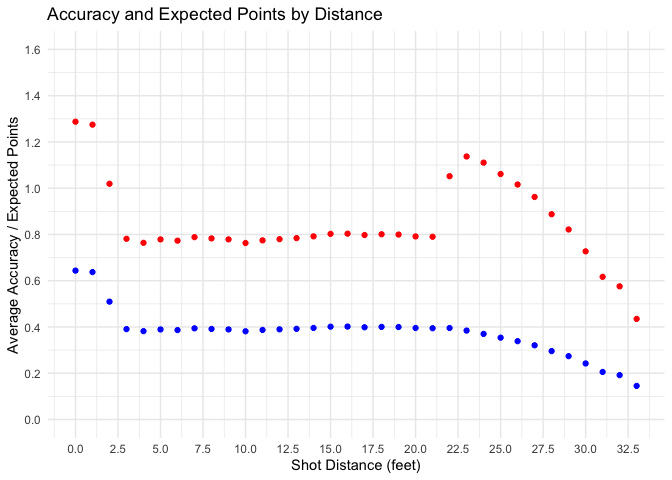

The asg4nbashots package provides cleaned NBA Shot Data (1997–2020), including shot types, distances, court zones, outcomes, season context, etc., plus a bundled Shiny app for interactive exploration and visualisation.
This package was inspired by the Stand-up Maths video “We analysed 4,678,387 NBA shots”.
The video does not publish a dataset or cleaning pipeline, hence this package uses a public dataset on data.world/sportsvizsunday covering a similar period and variables. After cleaning and standardisation, the resulting dataset contains ~4.7 million rows (slightly more than the 4.68M mentioned in the video), likely due to source compilation or filtering differences.
Key features
- 🏀 Comprehensive dataset: over 4.7 million shot attempts with 11 variables including
shot_distance,x_location,y_location,shot_type,shot_made_flag, andgame_date - 💡 Interactive app: launch with
run_nbashots_app()to explore accuracy and expected-points trends - 📚 Documentation: includes help pages, a vignette, and a pkgdown website
- 🕸️ pkgdown site: https://etc5523-2025.github.io/assignment-4-packages-and-shiny-apps-mozuqi25/
Installation
You can install the asg4nbashots package from GitHub using remotes:
# install.packages("remotes")
remotes::install_github("ETC5523-2025/assignment-4-packages-and-shiny-apps-mozuqi25")
# Load the package
library(asg4nbashots)After installation, you can load the package and explore the dataset or launch the Shiny app:
Quick Start
After installing and loading the package, you can start exploring the dataset or run the interactive Shiny app.
# Load the packaged dataset
data("nba_shots")
# Take a quick look at the data
dplyr::glimpse(nba_shots)
# Launch the Shiny app (opens in Viewer or web browser)
run_nbashots_app()This example demonstrates how users can reproduce analyses similar to those discussed in Assignments 1, including exploratory visualisation, data cleaning, and interactive communication of insights.
This app allows you to explore shot accuracy, distance patterns, and expected points interactively across all seasons.
What’s in the Data?
The nba_shots dataset contains detailed shot-level information from NBA games between 1997 and 2020.
Each row represents one shot attempt.
| Variable | Type | Description |
|---|---|---|
action_type |
Factor | Type of shot action (e.g., Jump Shot, Layup, Dunk). |
shot_distance |
Integer | Distance of the shot attempt, in feet. |
shot_zone_basic |
Factor | Broad shot zone category (e.g., Restricted Area, Mid-Range, Left Corner 3). |
shot_zone_area |
Factor | Court area where the shot occurred (Left, Center, Right). |
shot_zone_range |
Factor | Distance range (e.g., Less Than 8 ft., 8–16 ft., 16–24 ft., 24+ ft.). |
x_location |
Integer | X-coordinate of the shot on the court. |
y_location |
Integer | Y-coordinate of the shot on the court. |
shot_type |
Integer | Shot value (2 or 3 points). |
shot_made_flag |
Integer | 1 if the shot was made, 0 if missed. |
game_date |
Date | Date of the game (YYYY-MM-DD). |
season_type |
Factor | Season type (Regular Season or Playoffs). |
The dataset is stored in a compressed .rda file (data/nba_shots.rda),
with a size of approximately 18.8 MB, enabling efficient loading while preserving full detail.
data("nba_shots")Example: Accuracy and Expected Points by Distance
This example illustrates how to calculate two common performance metrics:
-
Accuracy: the percentage of made shots at each distance
- Expected points: the average points scored per attempt, based on shot success and shot type (2 or 3-point)
library(dplyr)
library(ggplot2)
# Compute accuracy and expected points by distance
summary_df <- nba_shots %>%
group_by(shot_distance) %>%
summarise(
accuracy = mean(shot_made_flag),
expected_points = mean(shot_type * shot_made_flag),
.groups = "drop"
)
# Plot both metrics
ggplot(summary_df, aes(x = shot_distance)) +
geom_point(aes(y = accuracy), color = "blue") +
geom_point(aes(y = expected_points), color = "red") +
scale_x_continuous(limits = c(0, 33), breaks = seq(0, 33, by = 2.5)) +
scale_y_continuous(limits = c(0, 1.6), breaks = seq(0, 1.6, by = 0.2)) +
labs(
title = "Accuracy and Expected Points by Distance",
x = "Shot Distance (feet)",
y = "Average Accuracy / Expected Points"
) +
theme_minimal()
The blue points represent the average shot accuracy at each distance, while the red points show the expected points per attempt — capturing the value of longer shots as 3-pointers become more frequent.
Reproducibility and Data Size
The original raw CSV file contains more than 4.7 million rows and is 857 MB in size.
It is not included in this repository due to GitHub’s file size limits and best practice for package distribution.The package instead provides a cleaned and compressed dataset (
data/nba_shots.rda),
which is only around 18.8 MB, for faster loading and easier sharing.The full data-cleaning and preparation process is documented in
data-raw/nba_shots.R, ensuring full reproducibility.If you need the full original CSV version, you can follow the data source link provided in the vignette or the pkgdown documentation website.
This design keeps the package lightweight while preserving data transparency.
Vignette and Documentation
A vignette is included in the package to demonstrate how to explore, visualise,
and interpret the NBA shot data using both static plots and the Shiny app.
You can open it directly in R with:
browseVignettes("asg4nbashots")All documentation, including dataset details, functions, and vignettes, is also available through the package website.